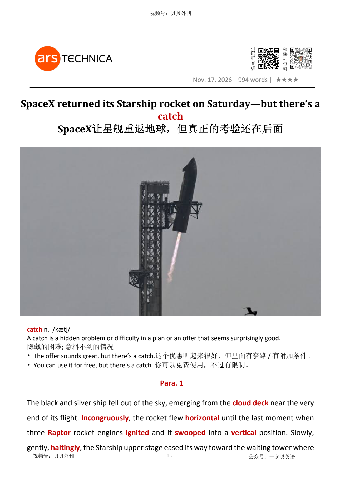

02 HEADLINE / 标题中英文解释
SpaceX returned its Starship rocket on Saturday—but there’s a catch
SpaceX让星舰重返地球，但真正的考验还在后面
catch
隐藏的困难; 意料不到的情况
A catch is a hidden problem or difficulty in a plan or an offer that seems surprisingly good.
SpaceX returned its Starship rocket on Saturday—but there’s a catch
SpaceX让星舰重返地球，但真正的考验还在后面
隐藏的困难; 意料不到的情况
A catch is a hidden problem or difficulty in a plan or an offer that seems surprisingly good.文章从星舰返回地球的惊险画面写起：上面级先以水平姿态下降，再在猛禽发动机点火后翻转为垂直姿态，最终只凭火箭两侧很小的凸起，被发射塔的两条机械臂精准接住。
这是SpaceX首次让从轨道返回的星舰上面级实现塔架捕获。
作者认为，这次成功不只是精彩表演，而是迈向大型火箭快速重复使用的重要里程碑。
此前SpaceX已实现猎鹰火箭海上回收和载人龙飞船入轨，但星舰体量更大、返航能量更高，用机械臂捕获它，几年前仍像天方夜谭。
文章随后以航天飞机作对比。
航天飞机接近可重复使用，却需要耗费大量时间维护脆弱的隔热瓦，运载人数和成本也远未达到最初预期。
30年间它只飞行135次；SpaceX却希望几年内做到每年135次，最终提升到每年数千次。
星舰仍未完成全部目标。
此次超重型助推器未能回收，塔架捕获也需要进一步提高成功率，而隔热系统可能是实现快速复用最难的一环。
不过，SpaceX已经证明完整回收火箭的关键构想可行，今天令人惊叹的场景未来可能成为日常。
最后，作者回应“地球问题尚未解决，为何还要探索太空”的质疑。
他认为这是一种虚假的二元对立，也提醒读者不要把现有技术误当作最终形态。
人类适应变化的韧性有时会使我们对技术危害麻木，却也能推动我们不断突破看似不可能的边界。
A Starship returned from space and made an unusual landing. It first fell almost horizontally.
Then three engines started, the ship turned upright and moved slowly towards a launch tower. Two large arms caught it by two very small points on its sides.
The space for error was extremely small. This was an important step for SpaceX.
The company wants to build a very large rocket that can be used again quickly. SpaceX has landed smaller rockets on ships and has carried people into space before.
However, Starship is much bigger and returns with much more energy, so catching it with tower arms is a greater challenge. The article compares Starship with the American Space Shuttle.
The shuttle was nearly reusable, but its heat shield needed slow and careful repairs after every flight. It was also much more expensive than NASA first expected.
The shuttle flew only 135 times in 30 years. SpaceX hopes Starship will one day fly hundreds or even thousands of times each year.
There is still a lot of work to do. SpaceX must make these landings reliable, and the heat shield may be the hardest problem.
The booster was not caught on this flight. Even so, the safe return of the upper stage showed that the main idea can work.
What looks amazing today may become normal in the future. Some people ask why humans should explore space when Earth has many problems.
The writer thinks this creates a false choice. Technology never has a final form, and new systems can completely change how we see the world.
Human beings sometimes accept harmful technology too easily, but our ability to adapt also helps us achieve things that once seemed impossible.
星舰塔捕壮举（Para 1-3） ├─ 惊险过程：星舰水平飞行后垂直就位，被塔臂捕获 ├─ 技术价值：迈向全箭快速复用的里程碑 └─ 震撼感受：远超以往火箭回收，触摸未来 航天飞机对照（Para 4-6） ├─ 航天飞机亮点：早期可重复使用载人航天器 ├─ 固有短板：无动力滑翔返航、隔热层娇贵 └─ 预期落差：成本极高，运力与频次不及设想 星舰量产目标（Para 7-8） ├─ 产能规划：目标每3天造一艘星舰 ├─ 频次差距：航天飞机30年135次飞行 └─ SpaceX愿景：数年之内年发射135次乃至上千次 复用技术前景（Para 9-10） ├─ 核心意义：重构人类与太空的关系 ├─ 攻坚难点：隔热盾仍是复用最大难关 └─ 长期预判：今日奇迹终将变成寻常景象 航天价值思辨（Para 11-13） ├─ 常见质疑：地球尚有难题，何必奔赴太空 ├─ 技术认知：技术没有终点，范式会持续迭代 └─ 文末升华：人类韧性，让不可能不断被突破
The black and silver ship fell out of the sky, emerging from the cloud deck大片云层 near the very end of its flight. Incongruously不合适的, the rocket flew horizontal水平的 until the last moment when three Raptor“猛禽”发动机 rocket engines ignited点燃 and it swooped向下猛冲 into a vertical垂直的 position. Slowly, gently, haltingly断断续续的, the Starship upper stage eased its way toward the waiting tower where two arms extended outward向外 地, awaiting expectantly期待的. The margins余地 are so incredibly narrow. Two nubs小凸起 on either side of the rocket, each protruding突出 only about one foot, were the only purchase着力点 the rocket would have on the arms.
黑银相间的星舰从天际坠落而下，在飞行的最后关头，穿出层层云幕，终于显露身影。令人难以置信的是，在下降过程中，火箭始终保持着水平姿态，直到最后一刻，三台猛禽发动机同时点火，星舰才猛然转为垂直状态。随后，星舰上面级缓缓地、轻柔地，甚至有些一顿一顿地向着早已等候在那里的发射塔靠近。塔身伸出的两只机械臂向外张开，仿佛正静候它的到来。整个过程的容错空间小得惊人：火箭两侧各有一个小小的凸起，每个不过一英尺（约30厘米）长，而这就是火箭能够搭上机械臂的唯一着力点。
Then, less than a minute after it came into view, the Starship upper stage was snagged钩住 by the launch tower, as snug紧密贴合的 as you like. And so it was all over. SpaceX, nearly a quarter of a century after its founding, had just taken a hugely significant step toward developing and optimizing使最优化 a massive, rapidly reusable rocket. This was a breathtaking激动人心的 feat技艺; a brilliant technical achievement that required the best engineering minds to think through充分考虑 a million different, difficult problems. And on Saturday evening, following a handful of practice runs into the Indian Ocean, they did it before the entire world.
就在它出现在视野中不到一分钟后，星舰上面级便被发射塔牢牢夹住，严丝合缝，稳稳当当。至此，一切尘埃落定。SpaceX成立近25年来，终于迈出了意义非凡的一步：研发并不断优化一款庞大、能够快速重复使用的火箭。这是一项令人叹为观止的壮举，也是一项卓越的工程成就。它背后凝聚着最顶尖的工程师团队的智慧，他们必须设法攻克数以百万计、错综复杂的技术难题。而就在周六傍晚，在此前于印度洋进行过数次试验性演练之后，他们终于在全世界的注视下，将这一切变成了现实。
Watching Starship launch from here a little less than a day earlier, and knowing it had orbited沿轨道运行 the planet multiple times, added to the sense of unreality不真实 in seeing this spaceship return to Earth under its own power, and be captured by the tower. It felt like stepping into走进 the future. SpaceX has dazzled使惊叹 us before, by landing rockets on barges驳船 and returning humans to space with Crew Dragon. But this flight took things to another level将某事提升到一个新高度. Starships are huge. They carry a huge amount of energy coming back from orbit. And until a few years ago, it seemed beyond fantastical异想天开的 to think about capturing a rocket with what are essentially outsized过大的 chopsticks.
不到一天前，我还在这里亲眼目睹星舰发射升空。知道它已经绕着地球飞行了数圈，再看到这艘飞船凭借自身动力返回地球，并最终被发射塔捕获，那种不真实感便愈发强烈。仿佛一脚踏进了未来。SpaceX此前已经多次令我们惊叹：它曾让火箭在海上驳船上实现着陆，也曾通过载人龙飞船将人类重新送入太空。但这一次的飞行，又将一切提升到了全新的高度。星舰的体量极其庞大，从轨道返回时携带的能量更是惊人。而就在几年前，设想用几根堪称巨型筷子的机械臂来捕获一枚火箭，在人们看来还近乎天方夜谭。
Nevertheless, it happened. Humans have built reusable spacecraft that flew into orbit before. In the 1970s, flush充满……的 with confidence after the triumphant高奏凯歌的 Moon landings, NASA designed and built several Space Shuttles航天飞机. They had solid固体的 rocket boosters that were fished从水中打捞 from the ocean and reused. The large orange external tank was not recovered after each flight, but the orbiters went to space for two weeks, or even longer, before returning to Earth and landing on a runway.
然而，这一切终究成为了现实。人类此前也造出过能够重复使用、并进入轨道飞行的航天器。20世纪70年代，在成功登月带来的巨大信心鼓舞下，美国国家航空航天局（NASA）设计并制造了多架航天飞机。它们配备的固体火箭助推器可以从海中打捞上来，再次使用。那个巨大的橙色外部燃料箱则不会在每次飞行后回收，但轨道飞行器能够在太空中执行为期两周、甚至更长时间的任务，随后返回地球，降落在跑道上。
The shuttles were engineering marvels令人惊异的人. But during the return to Earth they acted as gliders滑翔机, not igniting their engines. And their heat shields防护层 were delicate易损的 flowers, requiring painstaking需细心的 refurbishment翻新 after each flight. At the outset在开始时 of the shuttle program, the space agency contemplated考虑 sending dozens of humans into space at a time, and carrying cargo货物 at a cost as low of $25 per pound.
航天飞机堪称工程学上的奇迹。然而，在返回地球的过程中，它们只能像滑翔机一样滑翔，而不能重新点燃发动机。它们的隔热瓦系统也十分脆弱，每次飞行结束后，都需要经过极其细致、耗时耗力的维护。在航天飞机项目启动之初，NASA曾设想，每次可以将数十名人类送入太空，并将货物运输成本压低至每磅仅25美元。
Reality never matched these rosy过于乐观的 projections预测. The crew space capped out达到上限 at seven astronauts, and the cost-per-pound was closer to $25,000. Each orbiter cost an extraordinary amount of money to build; NASA only ever built five that went to space.
然而，现实远未达到这些乐观的预期。航天飞机的载人容量最终也只有七名宇航员，而每磅货物的运输成本却接近2.5万美元。每架轨道器的制造成本都高得惊人，NASA最终也只制造了五架真正执行过太空飞行任务的航天飞机。
SpaceX has five Starships in an advanced state of development at Starbase today; and its factory houses容纳 the components组成部分 for a dozen more. The company can currently manufacture a Starship upper stage in its South Texas Starfactory every three weeks. The factory was sized to produce a ship every three days. When SpaceX founder Elon Musk discussed these build targets in an interview five years ago, he sounded mad. But he no longer does.
如今，SpaceX在星际基地已有五艘星舰处于较为成熟的研发阶段，工厂内还储备着足以组装另外十余艘星舰的零部件。目前，公司每隔三周就能在南得克萨斯州的星际工厂制造出一艘星舰上面级。而这座工厂最初的设计产能，是每三天就能生产一艘。五年前，SpaceX创始人马斯克在一次采访中谈及这些生产目标时，听起来简直像个疯子。但如今，再也没人觉得他疯了。
The Space Shuttle was nearly a fully reusable space launch system, but it fell far short of未达到 low-cost, rapid launch. Over 30 years the vehicle made 135 flights. Within a few years SpaceX aims to fly 135 times a year, then thousands of times.
航天飞机曾是一套几乎实现完全重复使用的航天发射系统，却始终未能真正做到低成本、高频次发射。在长达30多年的时间里，航天飞机总共执行了135次飞行任务。而SpaceX的目标是：在未来几年内，每年实现135次飞行，随后进一步提升至数千次。
Such was the significance of Saturday. SpaceX aspires to有志 fundamentally根本上 change the relationship between humanity and the heavens. The first step is to get the entire rocket back. SpaceX has now returned both elements of a Starship rocket safely to its launch tower. It will take time to reach a high rate of success with such landings, but Saturday’s safe return offered a proof of concept.
这正是周六这次成功的意义所在。SpaceX的雄心，是从根本上改变人类与宇宙之间的关系。而实现这一愿景的第一步，就是让火箭完整地返回地球。如今，SpaceX已经成功将星舰火箭的两个部分都安全的带回发射塔。当然，要让这样的着陆方式达到很高的成功率，还需要时间。但周六的安全返回，已经为这项技术提供了切实可见的验证。
The landings will come with increasing frequency; and so will the launches. Over time SpaceX will perfect使完善 the heat shield that is likely to be the most difficult aspect of rapid reuse. And eventually, as difficult as it may be to believe, what we experienced with amazement惊奇 this weekend will become routine. One day, we will take this all for granted认为……理所当然. But not today.
此后，星舰着陆的次数会越来越多，发射的频率也将不断提高。随着时间推移，SpaceX还将逐步完善隔热瓦系统，这很可能是实现快速重复使用过程中最难攻克的一环。最终，无论今天看来多么难以置信，这个周末令我们惊叹不已的场景，终将变成再平常不过的日常。总有一天，我们会对此习以为常。但至少今天，还不是时候。
Back home on Earth, people sometimes lament对…感到悲痛 those among us who can’t help but忍不住 gaze凝视 skyward向着天空. Why go to space, they ask, when there is so much work to be done here on this planet? I’d like to say this attitude is understandable, but the truth is that I’ve always seen it as reflecting a false binary二元对立, one that imposes迫使 limits on what we can achieve and one that assumes there is nothing more to be gained from a tremendous巨大的 technological achievement than the achievement itself.
回到地球上，人们时常对那些总忍不住仰望星空的人颇有微词。他们会问：地球上还有那么多亟待解决的问题，为什么偏偏要去探索太空？我想说，这种想法确情有可原，但事实上，我始终认为，这种观点建立在一种错误的二元对立之上。它限制了人类所能实现的可能性，也错误地假定：一项伟大的技术突破，其价值不过在于突破本身，而再无其他收获。
One of the tricks that technology plays on us is that it sometimes leaves the impression of permanence—that a machine or system that works fairly well, or even extraordinarily well, in a certain way, is proof of an end state. But every technological system that becomes obsolete淘汰的 does so because it is replaced with a wholly new way of understanding the world and humanity’s place in it.
技术有一种迷惑人的本领：它有时会让我们产生一种错觉，以为某种技术或系统一旦能够稳定运行，甚至运行得极其出色，就意味着它已经抵达了终点，成为某种最终形态。然而，任何一种最终走向淘汰的技术体系，其被取代的原因，人们开始以全新的视角理解世界，也重新认识人类在这个世界中的位置。
This is not to say that every technological change is inherently内在的 good for humanity, because of course it is not. The resilience韧性 of our species, our impressive adaptability适应能力 in the face of面对 constant change, is one of our superpowers. It is also the quality that numbs使麻木 us to the impositions强加的负担 of new technology that we ought to reject. However, human resilience cuts the other way, too. It can dull削弱 our sense of wonder about what is possible when humanity attempts to do something that almost no one believes can be done. This weekend, SpaceX achieved the impossible. Tomorrow, someone else will, too.
当然，这并不是说每一次技术变革都必然有益于人类，事实显然并非如此。我们人类这个物种拥有惊人的韧性，以及面对持续变化时令人赞叹的适应能力。这是人类最强大的天赋之一。但也正是这种能力，让我们逐渐对新技术强加于我们的种种改变变得麻木，而其中有些改变我们本应拒绝。然而，人类的韧性还有另一面：它同样可能磨钝我们的感知，让我们逐渐失去对人类所能创造的奇迹的敬畏——尤其是当人类试图完成一件几乎无人相信能够实现的事情时。这个周末，SpaceX让不可能成为了可能。而未来，还会有其他人做到这一点。
隐藏的困难; 意料不到的情况
A catch is a hidden problem or difficulty in a plan or an offer that seems surprisingly good.
The offer sounds great, but there’s a catch.这个优惠听起来很好，但里面有套路 / 有附加条件。
大片云层；连续的云层
a broad, continuous layer or mass of clouds, especially one covering a large area of the sky
The aircraft emerged from the cloud deck as it began its descent. 飞机开始下降时，从大片云层中穿了出来。
The black and silver ship fell out of the sky, emerging from the cloud deck near the very end of its flight.
黑银相间的星舰从天际坠落而下，在飞行的最后关头，穿出层层云幕，终于显露身影。令人难以置信的是，在下降过程中，火箭始终保持着水平姿态，直到最后一刻，三台猛禽发动机同时点火，星舰才猛然转为垂直状态。随后，星舰上面级缓缓地、轻柔地，甚至有些一顿一顿地向着早已等候在那里的发射塔靠近。塔身伸出的两只机械臂向外张开，仿佛正静候它的到来。整个过程的容错空间小得惊人：火箭两侧各有一个小小的凸起，每个不过一英尺（约30厘米）长，而这就是火箭能够搭上机械臂…
不合适的；不相称的；不协调的
strange, and not suitable in a particular situation
Such traditional methods seem incongruous in our technical age. 此类传统方法似乎同我们今天的科技时代格格不入。
Incongruously, the rocket flew horizontal until the last moment when three Raptor rocket engines ignited and it swooped into a vertical position.
黑银相间的星舰从天际坠落而下，在飞行的最后关头，穿出层层云幕，终于显露身影。令人难以置信的是，在下降过程中，火箭始终保持着水平姿态，直到最后一刻，三台猛禽发动机同时点火，星舰才猛然转为垂直状态。随后，星舰上面级缓缓地、轻柔地，甚至有些一顿一顿地向着早已等候在那里的发射塔靠近。塔身伸出的两只机械臂向外张开，仿佛正静候它的到来。整个过程的容错空间小得惊人：火箭两侧各有一个小小的凸起，每个不过一英尺（约30厘米）长，而这就是火箭能够搭上机械臂…
水平的；与地面平行的；横的
flat and level; going across and parallel to the ground rather than going up and down
horizontal lines横线
Incongruously, the rocket flew horizontal until the last moment when three Raptor rocket engines ignited and it swooped into a vertical position.
黑银相间的星舰从天际坠落而下，在飞行的最后关头，穿出层层云幕，终于显露身影。令人难以置信的是，在下降过程中，火箭始终保持着水平姿态，直到最后一刻，三台猛禽发动机同时点火，星舰才猛然转为垂直状态。随后，星舰上面级缓缓地、轻柔地，甚至有些一顿一顿地向着早已等候在那里的发射塔靠近。塔身伸出的两只机械臂向外张开，仿佛正静候它的到来。整个过程的容错空间小得惊人：火箭两侧各有一个小小的凸起，每个不过一英尺（约30厘米）长，而这就是火箭能够搭上机械臂…
“猛禽”发动机（SpaceX火箭发动机名称）
the name of the rocket engine used by SpaceX's Starship
Three Raptor engines ignited before Starship turned upright. 三台“猛禽”发动机点火后，星舰转为垂直姿态。
Incongruously, the rocket flew horizontal until the last moment when three Raptor rocket engines ignited and it swooped into a vertical position.
黑银相间的星舰从天际坠落而下，在飞行的最后关头，穿出层层云幕，终于显露身影。令人难以置信的是，在下降过程中，火箭始终保持着水平姿态，直到最后一刻，三台猛禽发动机同时点火，星舰才猛然转为垂直状态。随后，星舰上面级缓缓地、轻柔地，甚至有些一顿一顿地向着早已等候在那里的发射塔靠近。塔身伸出的两只机械臂向外张开，仿佛正静候它的到来。整个过程的容错空间小得惊人：火箭两侧各有一个小小的凸起，每个不过一英尺（约30厘米）长，而这就是火箭能够搭上机械臂…
点燃; 着火
When you ignite something or when it ignites, it starts burning or explodes.
The bombs ignited a fire which destroyed some 60 houses. 炸弹引起了一场火灾，烧毁了大约六十间房屋。
Incongruously, the rocket flew horizontal until the last moment when three Raptor rocket engines ignited and it swooped into a vertical position.
黑银相间的星舰从天际坠落而下，在飞行的最后关头，穿出层层云幕，终于显露身影。令人难以置信的是，在下降过程中，火箭始终保持着水平姿态，直到最后一刻，三台猛禽发动机同时点火，星舰才猛然转为垂直状态。随后，星舰上面级缓缓地、轻柔地，甚至有些一顿一顿地向着早已等候在那里的发射塔靠近。塔身伸出的两只机械臂向外张开，仿佛正静候它的到来。整个过程的容错空间小得惊人：火箭两侧各有一个小小的凸起，每个不过一英尺（约30厘米）长，而这就是火箭能够搭上机械臂…
（尤指为了袭击）向下猛冲，俯冲
to fly quickly and suddenly downwards, especially in order to attack sb/sth
The aircraft swooped down over the buildings. 飞机俯冲到那些建筑物上方。
Incongruously, the rocket flew horizontal until the last moment when three Raptor rocket engines ignited and it swooped into a vertical position.
黑银相间的星舰从天际坠落而下，在飞行的最后关头，穿出层层云幕，终于显露身影。令人难以置信的是，在下降过程中，火箭始终保持着水平姿态，直到最后一刻，三台猛禽发动机同时点火，星舰才猛然转为垂直状态。随后，星舰上面级缓缓地、轻柔地，甚至有些一顿一顿地向着早已等候在那里的发射塔靠近。塔身伸出的两只机械臂向外张开，仿佛正静候它的到来。整个过程的容错空间小得惊人：火箭两侧各有一个小小的凸起，每个不过一英尺（约30厘米）长，而这就是火箭能够搭上机械臂…
垂直的；竖直的
standing or pointing straight up rather than lying flat
The rocket swooped into a vertical position. 火箭猛然转为垂直姿态。
Incongruously, the rocket flew horizontal until the last moment when three Raptor rocket engines ignited and it swooped into a vertical position.
黑银相间的星舰从天际坠落而下，在飞行的最后关头，穿出层层云幕，终于显露身影。令人难以置信的是，在下降过程中，火箭始终保持着水平姿态，直到最后一刻，三台猛禽发动机同时点火，星舰才猛然转为垂直状态。随后，星舰上面级缓缓地、轻柔地，甚至有些一顿一顿地向着早已等候在那里的发射塔靠近。塔身伸出的两只机械臂向外张开，仿佛正静候它的到来。整个过程的容错空间小得惊人：火箭两侧各有一个小小的凸起，每个不过一英尺（约30厘米）长，而这就是火箭能够搭上机械臂…
断断续续的；结结巴巴的
stopping and starting often, especially because you are not certain or are not very confident
a halting conversation断断续续的谈话
Slowly, gently, haltingly, the Starship upper stage eased its way toward the waiting tower where two arms extended outward, awaiting expectantly.
黑银相间的星舰从天际坠落而下，在飞行的最后关头，穿出层层云幕，终于显露身影。令人难以置信的是，在下降过程中，火箭始终保持着水平姿态，直到最后一刻，三台猛禽发动机同时点火，星舰才猛然转为垂直状态。随后，星舰上面级缓缓地、轻柔地，甚至有些一顿一顿地向着早已等候在那里的发射塔靠近。塔身伸出的两只机械臂向外张开，仿佛正静候它的到来。整个过程的容错空间小得惊人：火箭两侧各有一个小小的凸起，每个不过一英尺（约30厘米）长，而这就是火箭能够搭上机械臂…
向外 (移动) 地; (面) 向外地
If something moves or faces outward, it moves or faces away from the place you are in or the place you are talking about.
The top door opened outward. 最上面的门向外开着。
Slowly, gently, haltingly, the Starship upper stage eased its way toward the waiting tower where two arms extended outward, awaiting expectantly.
黑银相间的星舰从天际坠落而下，在飞行的最后关头，穿出层层云幕，终于显露身影。令人难以置信的是，在下降过程中，火箭始终保持着水平姿态，直到最后一刻，三台猛禽发动机同时点火，星舰才猛然转为垂直状态。随后，星舰上面级缓缓地、轻柔地，甚至有些一顿一顿地向着早已等候在那里的发射塔靠近。塔身伸出的两只机械臂向外张开，仿佛正静候它的到来。整个过程的容错空间小得惊人：火箭两侧各有一个小小的凸起，每个不过一英尺（约30厘米）长，而这就是火箭能够搭上机械臂…
期待的
If someone is expectant, they are excited because they think something interesting is about to happen.
An expectant crowd gathered. 满怀期待的一群人聚在了一起。
Slowly, gently, haltingly, the Starship upper stage eased its way toward the waiting tower where two arms extended outward, awaiting expectantly.
黑银相间的星舰从天际坠落而下，在飞行的最后关头，穿出层层云幕，终于显露身影。令人难以置信的是，在下降过程中，火箭始终保持着水平姿态，直到最后一刻，三台猛禽发动机同时点火，星舰才猛然转为垂直状态。随后，星舰上面级缓缓地、轻柔地，甚至有些一顿一顿地向着早已等候在那里的发射塔靠近。塔身伸出的两只机械臂向外张开，仿佛正静候它的到来。整个过程的容错空间小得惊人：火箭两侧各有一个小小的凸起，每个不过一英尺（约30厘米）长，而这就是火箭能够搭上机械臂…
余地；备用的时间（或空间、金钱等）
an extra amount of sth such as time, space, money, etc. that you include in order to make sure that sth is successful
a safety margin安全距离
The margins are so incredibly narrow.
黑银相间的星舰从天际坠落而下，在飞行的最后关头，穿出层层云幕，终于显露身影。令人难以置信的是，在下降过程中，火箭始终保持着水平姿态，直到最后一刻，三台猛禽发动机同时点火，星舰才猛然转为垂直状态。随后，星舰上面级缓缓地、轻柔地，甚至有些一顿一顿地向着早已等候在那里的发射塔靠近。塔身伸出的两只机械臂向外张开，仿佛正静候它的到来。整个过程的容错空间小得惊人：火箭两侧各有一个小小的凸起，每个不过一英尺（约30厘米）长，而这就是火箭能够搭上机械臂…
小凸起；小突块
a small rounded projection or lump
Two small nubs were the rocket's only purchase on the tower arms. 两个小凸起是火箭搭住塔臂的唯一着力点。
Two nubs on either side of the rocket, each protruding only about one foot, were the only purchase the rocket would have on the arms.
黑银相间的星舰从天际坠落而下，在飞行的最后关头，穿出层层云幕，终于显露身影。令人难以置信的是，在下降过程中，火箭始终保持着水平姿态，直到最后一刻，三台猛禽发动机同时点火，星舰才猛然转为垂直状态。随后，星舰上面级缓缓地、轻柔地，甚至有些一顿一顿地向着早已等候在那里的发射塔靠近。塔身伸出的两只机械臂向外张开，仿佛正静候它的到来。整个过程的容错空间小得惊人：火箭两侧各有一个小小的凸起，每个不过一英尺（约30厘米）长，而这就是火箭能够搭上机械臂…
突出；伸出；鼓出
to stick out from a place or a surface
protruding teeth龅牙
Two nubs on either side of the rocket, each protruding only about one foot, were the only purchase the rocket would have on the arms.
黑银相间的星舰从天际坠落而下，在飞行的最后关头，穿出层层云幕，终于显露身影。令人难以置信的是，在下降过程中，火箭始终保持着水平姿态，直到最后一刻，三台猛禽发动机同时点火，星舰才猛然转为垂直状态。随后，星舰上面级缓缓地、轻柔地，甚至有些一顿一顿地向着早已等候在那里的发射塔靠近。塔身伸出的两只机械臂向外张开，仿佛正静候它的到来。整个过程的容错空间小得惊人：火箭两侧各有一个小小的凸起，每个不过一英尺（约30厘米）长，而这就是火箭能够搭上机械臂…
着力点；可供抓牢或支撑的地方
a firm hold or point of support on a surface
The nubs gave the rocket purchase on the tower arms. 小凸起为火箭提供了搭住塔臂的着力点。
Two nubs on either side of the rocket, each protruding only about one foot, were the only purchase the rocket would have on the arms.
黑银相间的星舰从天际坠落而下，在飞行的最后关头，穿出层层云幕，终于显露身影。令人难以置信的是，在下降过程中，火箭始终保持着水平姿态，直到最后一刻，三台猛禽发动机同时点火，星舰才猛然转为垂直状态。随后，星舰上面级缓缓地、轻柔地，甚至有些一顿一顿地向着早已等候在那里的发射塔靠近。塔身伸出的两只机械臂向外张开，仿佛正静候它的到来。整个过程的容错空间小得惊人：火箭两侧各有一个小小的凸起，每个不过一英尺（约30厘米）长，而这就是火箭能够搭上机械臂…
（在带尖的东西上） 钩住，挂破，被钩住，被挂破
to catch or tear sth on sth rough or sharp; to become caught or torn in this way
I snagged my sweater on the wire fence.我的毛衣被铁丝网钩住了。
Then, less than a minute after it came into view, the Starship upper stage was snagged by the launch tower, as snug as you like.
就在它出现在视野中不到一分钟后，星舰上面级便被发射塔牢牢夹住，严丝合缝，稳稳当当。至此，一切尘埃落定。SpaceX成立近25年来，终于迈出了意义非凡的一步：研发并不断优化一款庞大、能够快速重复使用的火箭。这是一项令人叹为观止的壮举，也是一项卓越的工程成就。它背后凝聚着最顶尖的工程师团队的智慧，他们必须设法攻克数以百万计、错综复杂的技术难题。而就在周六傍晚，在此前于印度洋进行过数次试验性演练之后，他们终于在全世界的注视下，将这一切变成了现…
紧密贴合的；稳稳固定的
fitting closely, securely and comfortably
The upper stage sat as snug as you like in the tower arms. 星舰上面级严丝合缝地卡在塔臂之间。
Then, less than a minute after it came into view, the Starship upper stage was snagged by the launch tower, as snug as you like.
就在它出现在视野中不到一分钟后，星舰上面级便被发射塔牢牢夹住，严丝合缝，稳稳当当。至此，一切尘埃落定。SpaceX成立近25年来，终于迈出了意义非凡的一步：研发并不断优化一款庞大、能够快速重复使用的火箭。这是一项令人叹为观止的壮举，也是一项卓越的工程成就。它背后凝聚着最顶尖的工程师团队的智慧，他们必须设法攻克数以百万计、错综复杂的技术难题。而就在周六傍晚，在此前于印度洋进行过数次试验性演练之后，他们终于在全世界的注视下，将这一切变成了现…
使最优化；充分利用
to make sth as good as it can be; to use sth in the best possible way
to optimize the use of resources充分利用资源
SpaceX, nearly a quarter of a century after its founding, had just taken a hugely significant step toward developing and optimizing a massive, rapidly reusable rocket.
就在它出现在视野中不到一分钟后，星舰上面级便被发射塔牢牢夹住，严丝合缝，稳稳当当。至此，一切尘埃落定。SpaceX成立近25年来，终于迈出了意义非凡的一步：研发并不断优化一款庞大、能够快速重复使用的火箭。这是一项令人叹为观止的壮举，也是一项卓越的工程成就。它背后凝聚着最顶尖的工程师团队的智慧，他们必须设法攻克数以百万计、错综复杂的技术难题。而就在周六傍晚，在此前于印度洋进行过数次试验性演练之后，他们终于在全世界的注视下，将这一切变成了现…
激动人心的；惊人的
very exciting or impressive (usually in a pleasant way); very surprising
a breathtaking view of the mountains群山的壮丽景色
This was a breathtaking feat; a brilliant technical achievement that required the best engineering minds to think through a million different, difficult problems.
就在它出现在视野中不到一分钟后，星舰上面级便被发射塔牢牢夹住，严丝合缝，稳稳当当。至此，一切尘埃落定。SpaceX成立近25年来，终于迈出了意义非凡的一步：研发并不断优化一款庞大、能够快速重复使用的火箭。这是一项令人叹为观止的壮举，也是一项卓越的工程成就。它背后凝聚着最顶尖的工程师团队的智慧，他们必须设法攻克数以百万计、错综复杂的技术难题。而就在周六傍晚，在此前于印度洋进行过数次试验性演练之后，他们终于在全世界的注视下，将这一切变成了现…
技艺；武艺；功绩；英勇事迹
an action or a piece of work that needs skill, strength or courage
The tunnel is a brilliant feat of engineering.这条隧道是工程方面的光辉业绩。
This was a breathtaking feat; a brilliant technical achievement that required the best engineering minds to think through a million different, difficult problems.
就在它出现在视野中不到一分钟后，星舰上面级便被发射塔牢牢夹住，严丝合缝，稳稳当当。至此，一切尘埃落定。SpaceX成立近25年来，终于迈出了意义非凡的一步：研发并不断优化一款庞大、能够快速重复使用的火箭。这是一项令人叹为观止的壮举，也是一项卓越的工程成就。它背后凝聚着最顶尖的工程师团队的智慧，他们必须设法攻克数以百万计、错综复杂的技术难题。而就在周六傍晚，在此前于印度洋进行过数次试验性演练之后，他们终于在全世界的注视下，将这一切变成了现…
沿轨道运行；围绕…运动
to move in an orbit (= a curved path) around a much larger object, especially a planet, star, etc.
The earth takes a year to orbit the sun.地球绕太阳一周要一年的时间。
Watching Starship launch from here a little less than a day earlier, and knowing it had orbited the planet multiple times, added to the sense of unreality in seeing this spaceship return to Earth under its own power, and be captured by the tower.
不到一天前，我还在这里亲眼目睹星舰发射升空。知道它已经绕着地球飞行了数圈，再看到这艘飞船凭借自身动力返回地球，并最终被发射塔捕获，那种不真实感便愈发强烈。仿佛一脚踏进了未来。SpaceX此前已经多次令我们惊叹：它曾让火箭在海上驳船上实现着陆，也曾通过载人龙飞船将人类重新送入太空。但这一次的飞行，又将一切提升到了全新的高度。星舰的体量极其庞大，从轨道返回时携带的能量更是惊人。而就在几年前，设想用几根堪称巨型筷子的机械臂来捕获一枚火箭，在人…
不真实；虚幻；非现实感；荒诞感
the quality or state of being unreal, imaginary or not consistent with reality; a feeling that something is strange or difficult to believe
The scale of the disaster was so enormous that it gave the whole situation a sense of unreality. 这场灾难的规模如此巨大，以至于整个情境都显得有些不真实。
Watching Starship launch from here a little less than a day earlier, and knowing it had orbited the planet multiple times, added to the sense of unreality in seeing this spaceship return to Earth under its own power, and be captured by the tower.
不到一天前，我还在这里亲眼目睹星舰发射升空。知道它已经绕着地球飞行了数圈，再看到这艘飞船凭借自身动力返回地球，并最终被发射塔捕获，那种不真实感便愈发强烈。仿佛一脚踏进了未来。SpaceX此前已经多次令我们惊叹：它曾让火箭在海上驳船上实现着陆，也曾通过载人龙飞船将人类重新送入太空。但这一次的飞行，又将一切提升到了全新的高度。星舰的体量极其庞大，从轨道返回时携带的能量更是惊人。而就在几年前，设想用几根堪称巨型筷子的机械臂来捕获一枚火箭，在人…
使惊叹；使赞叹不已
to impress someone greatly with an achievement
SpaceX has dazzled us before with reusable rockets. SpaceX此前已用可重复使用火箭令我们惊叹。
SpaceX has dazzled us before, by landing rockets on barges and returning humans to space with Crew Dragon.
不到一天前，我还在这里亲眼目睹星舰发射升空。知道它已经绕着地球飞行了数圈，再看到这艘飞船凭借自身动力返回地球，并最终被发射塔捕获，那种不真实感便愈发强烈。仿佛一脚踏进了未来。SpaceX此前已经多次令我们惊叹：它曾让火箭在海上驳船上实现着陆，也曾通过载人龙飞船将人类重新送入太空。但这一次的飞行，又将一切提升到了全新的高度。星舰的体量极其庞大，从轨道返回时携带的能量更是惊人。而就在几年前，设想用几根堪称巨型筷子的机械臂来捕获一枚火箭，在人…
驳船（运河、河流上运载客货的大型平底船）
a large boat with a flat bottom, used for carrying goods and people on canals and rivers
SpaceX has dazzled us before, by landing rockets on barges and returning humans to space with Crew Dragon.
不到一天前，我还在这里亲眼目睹星舰发射升空。知道它已经绕着地球飞行了数圈，再看到这艘飞船凭借自身动力返回地球，并最终被发射塔捕获，那种不真实感便愈发强烈。仿佛一脚踏进了未来。SpaceX此前已经多次令我们惊叹：它曾让火箭在海上驳船上实现着陆，也曾通过载人龙飞船将人类重新送入太空。但这一次的飞行，又将一切提升到了全新的高度。星舰的体量极其庞大，从轨道返回时携带的能量更是惊人。而就在几年前，设想用几根堪称巨型筷子的机械臂来捕获一枚火箭，在人…
异想天开的；离奇的；不可思议的
extremely unusual, imaginative or extraordinary
The company's fantastical promises about future profits left investors skeptical. 这家公司对未来利润作出的不切实际的承诺让投资者心存怀疑。
And until a few years ago, it seemed beyond fantastical to think about capturing a rocket with what are essentially outsized chopsticks.
不到一天前，我还在这里亲眼目睹星舰发射升空。知道它已经绕着地球飞行了数圈，再看到这艘飞船凭借自身动力返回地球，并最终被发射塔捕获，那种不真实感便愈发强烈。仿佛一脚踏进了未来。SpaceX此前已经多次令我们惊叹：它曾让火箭在海上驳船上实现着陆，也曾通过载人龙飞船将人类重新送入太空。但这一次的飞行，又将一切提升到了全新的高度。星舰的体量极其庞大，从轨道返回时携带的能量更是惊人。而就在几年前，设想用几根堪称巨型筷子的机械臂来捕获一枚火箭，在人…
过大的；超出寻常的；影响巨大（或格外显著）的
larger, more important or more influential than is usual or expected
The technology sector has an outsized influence on the country's economy. 科技行业对该国经济的影响力远超其他行业。
And until a few years ago, it seemed beyond fantastical to think about capturing a rocket with what are essentially outsized chopsticks.
不到一天前，我还在这里亲眼目睹星舰发射升空。知道它已经绕着地球飞行了数圈，再看到这艘飞船凭借自身动力返回地球，并最终被发射塔捕获，那种不真实感便愈发强烈。仿佛一脚踏进了未来。SpaceX此前已经多次令我们惊叹：它曾让火箭在海上驳船上实现着陆，也曾通过载人龙飞船将人类重新送入太空。但这一次的飞行，又将一切提升到了全新的高度。星舰的体量极其庞大，从轨道返回时携带的能量更是惊人。而就在几年前，设想用几根堪称巨型筷子的机械臂来捕获一枚火箭，在人…
充满……的；富有……的（flush with）
having a large amount of something, especially confidence or money
NASA was flush with confidence after the Moon landings. 登月成功后，NASA充满信心。
In the 1970s, flush with confidence after the triumphant Moon landings, NASA designed and built several Space Shuttles.
然而，这一切终究成为了现实。人类此前也造出过能够重复使用、并进入轨道飞行的航天器。20世纪70年代，在成功登月带来的巨大信心鼓舞下，美国国家航空航天局（NASA）设计并制造了多架航天飞机。它们配备的固体火箭助推器可以从海中打捞上来，再次使用。那个巨大的橙色外部燃料箱则不会在每次飞行后回收，但轨道飞行器能够在太空中执行为期两周、甚至更长时间的任务，随后返回地球，降落在跑道上。
高奏凯歌的；大获全胜的；巨大成功的
very successful in a way that causes great satisfaction
They emerged triumphant in the September election.他们在九月份的选举中大获全胜。
In the 1970s, flush with confidence after the triumphant Moon landings, NASA designed and built several Space Shuttles.
然而，这一切终究成为了现实。人类此前也造出过能够重复使用、并进入轨道飞行的航天器。20世纪70年代，在成功登月带来的巨大信心鼓舞下，美国国家航空航天局（NASA）设计并制造了多架航天飞机。它们配备的固体火箭助推器可以从海中打捞上来，再次使用。那个巨大的橙色外部燃料箱则不会在每次飞行后回收，但轨道飞行器能够在太空中执行为期两周、甚至更长时间的任务，随后返回地球，降落在跑道上。
航天飞机；往返两地的运输工具
a spacecraft or vehicle that travels regularly between two places
NASA designed and built several Space Shuttles. NASA设计并制造了多架航天飞机。
In the 1970s, flush with confidence after the triumphant Moon landings, NASA designed and built several Space Shuttles.
然而，这一切终究成为了现实。人类此前也造出过能够重复使用、并进入轨道飞行的航天器。20世纪70年代，在成功登月带来的巨大信心鼓舞下，美国国家航空航天局（NASA）设计并制造了多架航天飞机。它们配备的固体火箭助推器可以从海中打捞上来，再次使用。那个巨大的橙色外部燃料箱则不会在每次飞行后回收，但轨道飞行器能够在太空中执行为期两周、甚至更长时间的任务，随后返回地球，降落在跑道上。
固体的；坚硬的
hard or firm; not in the form of a liquid or gas
The planet Jupiter may have no solid surface at all.木星表面可能根本就不是固体的。
They had solid rocket boosters that were fished from the ocean and reused.
然而，这一切终究成为了现实。人类此前也造出过能够重复使用、并进入轨道飞行的航天器。20世纪70年代，在成功登月带来的巨大信心鼓舞下，美国国家航空航天局（NASA）设计并制造了多架航天飞机。它们配备的固体火箭助推器可以从海中打捞上来，再次使用。那个巨大的橙色外部燃料箱则不会在每次飞行后回收，但轨道飞行器能够在太空中执行为期两周、甚至更长时间的任务，随后返回地球，降落在跑道上。
从水中打捞；捞出
to pull or retrieve something from water
The solid rocket boosters were fished from the ocean and reused. 固体火箭助推器从海中打捞后再次使用。
They had solid rocket boosters that were fished from the ocean and reused.
然而，这一切终究成为了现实。人类此前也造出过能够重复使用、并进入轨道飞行的航天器。20世纪70年代，在成功登月带来的巨大信心鼓舞下，美国国家航空航天局（NASA）设计并制造了多架航天飞机。它们配备的固体火箭助推器可以从海中打捞上来，再次使用。那个巨大的橙色外部燃料箱则不会在每次飞行后回收，但轨道飞行器能够在太空中执行为期两周、甚至更长时间的任务，随后返回地球，降落在跑道上。
令人惊异的人（或事）；奇迹
a wonderful and surprising person or thing
the marvels of nature/technology 大自然的╱技术的奇迹
The shuttles were engineering marvels.
航天飞机堪称工程学上的奇迹。然而，在返回地球的过程中，它们只能像滑翔机一样滑翔，而不能重新点燃发动机。它们的隔热瓦系统也十分脆弱，每次飞行结束后，都需要经过极其细致、耗时耗力的维护。在航天飞机项目启动之初，NASA曾设想，每次可以将数十名人类送入太空，并将货物运输成本压低至每磅仅25美元。
滑翔机
A glider is an aircraft without an engine, which flies by floating on air currents.
But during the return to Earth they acted as gliders, not igniting their engines.
航天飞机堪称工程学上的奇迹。然而，在返回地球的过程中，它们只能像滑翔机一样滑翔，而不能重新点燃发动机。它们的隔热瓦系统也十分脆弱，每次飞行结束后，都需要经过极其细致、耗时耗力的维护。在航天飞机项目启动之初，NASA曾设想，每次可以将数十名人类送入太空，并将货物运输成本压低至每磅仅25美元。
防护层；隔热罩（heat shield）
a protective covering that prevents heat or damage
The shuttle's heat shields needed careful refurbishment. 航天飞机的隔热罩需要细致整修。
And their heat shields were delicate flowers, requiring painstaking refurbishment after each flight.
航天飞机堪称工程学上的奇迹。然而，在返回地球的过程中，它们只能像滑翔机一样滑翔，而不能重新点燃发动机。它们的隔热瓦系统也十分脆弱，每次飞行结束后，都需要经过极其细致、耗时耗力的维护。在航天飞机项目启动之初，NASA曾设想，每次可以将数十名人类送入太空，并将货物运输成本压低至每磅仅25美元。
易损的；易碎的；脆弱的
easily damaged or broken
delicate china teacups易碎的瓷茶杯
And their heat shields were delicate flowers, requiring painstaking refurbishment after each flight.
航天飞机堪称工程学上的奇迹。然而，在返回地球的过程中，它们只能像滑翔机一样滑翔，而不能重新点燃发动机。它们的隔热瓦系统也十分脆弱，每次飞行结束后，都需要经过极其细致、耗时耗力的维护。在航天飞机项目启动之初，NASA曾设想，每次可以将数十名人类送入太空，并将货物运输成本压低至每磅仅25美元。
需细心的；辛苦的；需专注的
needing a lot of care, effort and attention to detail
painstaking research细心的研究
And their heat shields were delicate flowers, requiring painstaking refurbishment after each flight.
航天飞机堪称工程学上的奇迹。然而，在返回地球的过程中，它们只能像滑翔机一样滑翔，而不能重新点燃发动机。它们的隔热瓦系统也十分脆弱，每次飞行结束后，都需要经过极其细致、耗时耗力的维护。在航天飞机项目启动之初，NASA曾设想，每次可以将数十名人类送入太空，并将货物运输成本压低至每磅仅25美元。
翻新；整修；翻修
the process of repairing and improving a building, room or piece of equipment so that it looks new or works better
The hotel is closed for refurbishment and will reopen next spring. 这家酒店因翻新而暂时关闭，将于明年春天重新开业。
And their heat shields were delicate flowers, requiring painstaking refurbishment after each flight.
航天飞机堪称工程学上的奇迹。然而，在返回地球的过程中，它们只能像滑翔机一样滑翔，而不能重新点燃发动机。它们的隔热瓦系统也十分脆弱，每次飞行结束后，都需要经过极其细致、耗时耗力的维护。在航天飞机项目启动之初，NASA曾设想，每次可以将数十名人类送入太空，并将货物运输成本压低至每磅仅25美元。
在开始时; 从一开始
If something happens at the outset of an event, process, or period of time, it happens at the beginning of it. If something happens from the outset it happens from the beginning and continues to happen.
Decide at the outset what kind of learning programme you want to follow.
At the outset of the shuttle program, the space agency contemplated sending dozens of humans into space at a time, and carrying cargo at a cost as low of $25 per pound.
航天飞机堪称工程学上的奇迹。然而，在返回地球的过程中，它们只能像滑翔机一样滑翔，而不能重新点燃发动机。它们的隔热瓦系统也十分脆弱，每次飞行结束后，都需要经过极其细致、耗时耗力的维护。在航天飞机项目启动之初，NASA曾设想，每次可以将数十名人类送入太空，并将货物运输成本压低至每磅仅25美元。
考虑；思量；思忖
to think about whether you should do sth, or how you should do sth
You're too young to be contemplating retirement.你考虑退休还太年轻。
At the outset of the shuttle program, the space agency contemplated sending dozens of humans into space at a time, and carrying cargo at a cost as low of $25 per pound.
航天飞机堪称工程学上的奇迹。然而，在返回地球的过程中，它们只能像滑翔机一样滑翔，而不能重新点燃发动机。它们的隔热瓦系统也十分脆弱，每次飞行结束后，都需要经过极其细致、耗时耗力的维护。在航天飞机项目启动之初，NASA曾设想，每次可以将数十名人类送入太空，并将货物运输成本压低至每磅仅25美元。
过于乐观的；看似美好的
optimistic and hopeful, sometimes more than the facts justify
Reality never matched NASA's rosy projections. 现实从未达到NASA乐观的设想。
Reality never matched these rosy projections.
然而，现实远未达到这些乐观的预期。航天飞机的载人容量最终也只有七名宇航员，而每磅货物的运输成本却接近2.5万美元。每架轨道器的制造成本都高得惊人，NASA最终也只制造了五架真正执行过太空飞行任务的航天飞机。
预测；推断；设想
an estimate or a statement of what figures, amounts, or events will be in the future, or what they were in the past, based on what is happening now
to make forward/backward projections of population figures推断未来╱过去的人口数量
Reality never matched these rosy projections.
然而，现实远未达到这些乐观的预期。航天飞机的载人容量最终也只有七名宇航员，而每磅货物的运输成本却接近2.5万美元。每架轨道器的制造成本都高得惊人，NASA最终也只制造了五架真正执行过太空飞行任务的航天飞机。
达到上限；达到最高限额
to reach a maximum limit or fixed upper amount
The company's spending on infrastructure will cap out at $10 billion this year. 该公司今年在基础设施上的支出将达到100亿美元的上限。
The crew space capped out at seven astronauts, and the cost-per-pound was closer to $25,000.
然而，现实远未达到这些乐观的预期。航天飞机的载人容量最终也只有七名宇航员，而每磅货物的运输成本却接近2.5万美元。每架轨道器的制造成本都高得惊人，NASA最终也只制造了五架真正执行过太空飞行任务的航天飞机。
容纳；存放；设有
to contain or provide space for something
The factory houses components for more Starships. 工厂存放着可组装更多星舰的零部件。
SpaceX has five Starships in an advanced state of development at Starbase today; and its factory houses the components for a dozen more.
如今，SpaceX在星际基地已有五艘星舰处于较为成熟的研发阶段，工厂内还储备着足以组装另外十余艘星舰的零部件。目前，公司每隔三周就能在南得克萨斯州的星际工厂制造出一艘星舰上面级。而这座工厂最初的设计产能，是每三天就能生产一艘。五年前，SpaceX创始人马斯克在一次采访中谈及这些生产目标时，听起来简直像个疯子。但如今，再也没人觉得他疯了。
组成部分；成分；部件
one of several parts of which sth is made
the components of a machine机器部件
SpaceX has five Starships in an advanced state of development at Starbase today; and its factory houses the components for a dozen more.
如今，SpaceX在星际基地已有五艘星舰处于较为成熟的研发阶段，工厂内还储备着足以组装另外十余艘星舰的零部件。目前，公司每隔三周就能在南得克萨斯州的星际工厂制造出一艘星舰上面级。而这座工厂最初的设计产能，是每三天就能生产一艘。五年前，SpaceX创始人马斯克在一次采访中谈及这些生产目标时，听起来简直像个疯子。但如今，再也没人觉得他疯了。
未达到；不符合；达不到
to fail to reach a particular standard, amount or expectation
The company's profits fell short of analysts' expectations. 该公司的利润未达到分析师的预期。
The Space Shuttle was nearly a fully reusable space launch system, but it fell far short of low-cost, rapid launch.
航天飞机曾是一套几乎实现完全重复使用的航天发射系统，却始终未能真正做到低成本、高频次发射。在长达30多年的时间里，航天飞机总共执行了135次飞行任务。而SpaceX的目标是：在未来几年内，每年实现135次飞行，随后进一步提升至数千次。
有志 (于)
If you aspire to something such as an important job, you have a strong desire to achieve it.
...people who aspire to public office. …志在获得公职的人们。
SpaceX aspires to fundamentally change the relationship between humanity and the heavens.
这正是周六这次成功的意义所在。SpaceX的雄心，是从根本上改变人类与宇宙之间的关系。而实现这一愿景的第一步，就是让火箭完整地返回地球。如今，SpaceX已经成功将星舰火箭的两个部分都安全的带回发射塔。当然，要让这样的着陆方式达到很高的成功率，还需要时间。但周六的安全返回，已经为这项技术提供了切实可见的验证。
根本上；完全地
in every way that is important; completely
The two approaches are fundamentally different.这两个处理方法完全不同。
SpaceX aspires to fundamentally change the relationship between humanity and the heavens.
这正是周六这次成功的意义所在。SpaceX的雄心，是从根本上改变人类与宇宙之间的关系。而实现这一愿景的第一步，就是让火箭完整地返回地球。如今，SpaceX已经成功将星舰火箭的两个部分都安全的带回发射塔。当然，要让这样的着陆方式达到很高的成功率，还需要时间。但周六的安全返回，已经为这项技术提供了切实可见的验证。
使完善；使完美；使完备
to make sth perfect or as good as you can
As a musician, she has spent years perfecting her technique.
Over time SpaceX will perfect the heat shield that is likely to be the most difficult aspect of rapid reuse.
此后，星舰着陆的次数会越来越多，发射的频率也将不断提高。随着时间推移，SpaceX还将逐步完善隔热瓦系统，这很可能是实现快速重复使用过程中最难攻克的一环。最终，无论今天看来多么难以置信，这个周末令我们惊叹不已的场景，终将变成再平常不过的日常。总有一天，我们会对此习以为常。但至少今天，还不是时候。
惊奇；惊愕；惊诧
a feeling of great surprise
To my amazement , he remembered me.使我大为惊奇的是他还记得我。
And eventually, as difficult as it may be to believe, what we experienced with amazement this weekend will become routine.
此后，星舰着陆的次数会越来越多，发射的频率也将不断提高。随着时间推移，SpaceX还将逐步完善隔热瓦系统，这很可能是实现快速重复使用过程中最难攻克的一环。最终，无论今天看来多么难以置信，这个周末令我们惊叹不已的场景，终将变成再平常不过的日常。总有一天，我们会对此习以为常。但至少今天，还不是时候。
认为……理所当然；不珍惜；不把……当回事
to fail to appreciate someone or something because you assume they will always be there or available
We often take clean water for granted until we no longer have easy access to it. 我们常常把干净的水视为理所当然，直到无法轻易获得时才意识到它的珍贵。
One day, we will take this all for granted.
此后，星舰着陆的次数会越来越多，发射的频率也将不断提高。随着时间推移，SpaceX还将逐步完善隔热瓦系统，这很可能是实现快速重复使用过程中最难攻克的一环。最终，无论今天看来多么难以置信，这个周末令我们惊叹不已的场景，终将变成再平常不过的日常。总有一天，我们会对此习以为常。但至少今天，还不是时候。
对…感到悲痛；痛惜；对…表示失望
to feel or express great sadness or disappointment about sb/sth
In the poem he laments the destruction of the countryside. 在那首诗里他对乡村遭到的破坏流露出悲哀。
Back home on Earth, people sometimes lament those among us who can’t help but gaze skyward.
回到地球上，人们时常对那些总忍不住仰望星空的人颇有微词。他们会问：地球上还有那么多亟待解决的问题，为什么偏偏要去探索太空？我想说，这种想法确情有可原，但事实上，我始终认为，这种观点建立在一种错误的二元对立之上。它限制了人类所能实现的可能性，也错误地假定：一项伟大的技术突破，其价值不过在于突破本身，而再无其他收获。
忍不住；不禁；不得不
to be unable to stop oneself from doing something; to feel compelled to do something
I can't help but wonder whether we made the right decision. 我不禁怀疑我们是否做出了正确的决定。
Back home on Earth, people sometimes lament those among us who can’t help but gaze skyward.
回到地球上，人们时常对那些总忍不住仰望星空的人颇有微词。他们会问：地球上还有那么多亟待解决的问题，为什么偏偏要去探索太空？我想说，这种想法确情有可原，但事实上，我始终认为，这种观点建立在一种错误的二元对立之上。它限制了人类所能实现的可能性，也错误地假定：一项伟大的技术突破，其价值不过在于突破本身，而再无其他收获。
凝视；注视；盯着
to look steadily at sb/sth for a long time, either because you are very interested or surprised, or because you are thinking of sth else
She gazed at him in amazement.她惊异地注视着他。
Back home on Earth, people sometimes lament those among us who can’t help but gaze skyward.
回到地球上，人们时常对那些总忍不住仰望星空的人颇有微词。他们会问：地球上还有那么多亟待解决的问题，为什么偏偏要去探索太空？我想说，这种想法确情有可原，但事实上，我始终认为，这种观点建立在一种错误的二元对立之上。它限制了人类所能实现的可能性，也错误地假定：一项伟大的技术突破，其价值不过在于突破本身，而再无其他收获。
向着天空; 朝向天空
if you look skyward or skywards, you look up toward the sky.
He pointed skywards. 他指向天空。
Back home on Earth, people sometimes lament those among us who can’t help but gaze skyward.
回到地球上，人们时常对那些总忍不住仰望星空的人颇有微词。他们会问：地球上还有那么多亟待解决的问题，为什么偏偏要去探索太空？我想说，这种想法确情有可原，但事实上，我始终认为，这种观点建立在一种错误的二元对立之上。它限制了人类所能实现的可能性，也错误地假定：一项伟大的技术突破，其价值不过在于突破本身，而再无其他收获。
二元对立；非此即彼的两种选择
a division into only two opposing choices or states
The writer rejects the false binary between Earth and space. 作者反对地球与太空之间的虚假二元对立。
I’d like to say this attitude is understandable, but the truth is that I’ve always seen it as reflecting a false binary, one that imposes limits on what we can achieve and one that assumes there is nothing more to be gained from a tremendous technological achi…
回到地球上，人们时常对那些总忍不住仰望星空的人颇有微词。他们会问：地球上还有那么多亟待解决的问题，为什么偏偏要去探索太空？我想说，这种想法确情有可原，但事实上，我始终认为，这种观点建立在一种错误的二元对立之上。它限制了人类所能实现的可能性，也错误地假定：一项伟大的技术突破，其价值不过在于突破本身，而再无其他收获。
迫使；把…强加于
to force sb/sth to have to deal with sth that is difficult or unpleasant
to impose limitations/restrictions/constraints on sth强行限制╱管制╱约束某事物
I’d like to say this attitude is understandable, but the truth is that I’ve always seen it as reflecting a false binary, one that imposes limits on what we can achieve and one that assumes there is nothing more to be gained from a tremendous technological achi…
回到地球上，人们时常对那些总忍不住仰望星空的人颇有微词。他们会问：地球上还有那么多亟待解决的问题，为什么偏偏要去探索太空？我想说，这种想法确情有可原，但事实上，我始终认为，这种观点建立在一种错误的二元对立之上。它限制了人类所能实现的可能性，也错误地假定：一项伟大的技术突破，其价值不过在于突破本身，而再无其他收获。
巨大的；极大的
very great
a tremendous explosion巨大的爆炸声
I’d like to say this attitude is understandable, but the truth is that I’ve always seen it as reflecting a false binary, one that imposes limits on what we can achieve and one that assumes there is nothing more to be gained from a tremendous technological achi…
回到地球上，人们时常对那些总忍不住仰望星空的人颇有微词。他们会问：地球上还有那么多亟待解决的问题，为什么偏偏要去探索太空？我想说，这种想法确情有可原，但事实上，我始终认为，这种观点建立在一种错误的二元对立之上。它限制了人类所能实现的可能性，也错误地假定：一项伟大的技术突破，其价值不过在于突破本身，而再无其他收获。
淘汰的；废弃的；过时的
no longer used because sth new has been invented SYN out of date
obsolete technology过时技术
But every technological system that becomes obsolete does so because it is replaced with a wholly new way of understanding the world and humanity’s place in it.
技术有一种迷惑人的本领：它有时会让我们产生一种错觉，以为某种技术或系统一旦能够稳定运行，甚至运行得极其出色，就意味着它已经抵达了终点，成为某种最终形态。然而，任何一种最终走向淘汰的技术体系，其被取代的原因，人们开始以全新的视角理解世界，也重新认识人类在这个世界中的位置。
内在的；固有的（原文中 inherently 表示“本质上”）
existing as a natural or permanent part of something
Technological change is not inherently good for humanity. 技术变革并非本质上都有益于人类。
This is not to say that every technological change is inherently good for humanity, because of course it is not.
当然，这并不是说每一次技术变革都必然有益于人类，事实显然并非如此。我们人类这个物种拥有惊人的韧性，以及面对持续变化时令人赞叹的适应能力。这是人类最强大的天赋之一。但也正是这种能力，让我们逐渐对新技术强加于我们的种种改变变得麻木，而其中有些改变我们本应拒绝。然而，人类的韧性还有另一面：它同样可能磨钝我们的感知，让我们逐渐失去对人类所能创造的奇迹的敬畏——尤其是当人类试图完成一件几乎无人相信能够实现的事情时。这个周末，SpaceX让不可能成…
韧性；适应力；复原力；抗逆力
the ability to recover quickly from difficulties, setbacks or challenging situations
The economy has shown remarkable resilience in the face of global uncertainty. 面对全球不确定性，经济表现出了非凡的韧性。
The resilience of our species, our impressive adaptability in the face of constant change, is one of our superpowers.
当然，这并不是说每一次技术变革都必然有益于人类，事实显然并非如此。我们人类这个物种拥有惊人的韧性，以及面对持续变化时令人赞叹的适应能力。这是人类最强大的天赋之一。但也正是这种能力，让我们逐渐对新技术强加于我们的种种改变变得麻木，而其中有些改变我们本应拒绝。然而，人类的韧性还有另一面：它同样可能磨钝我们的感知，让我们逐渐失去对人类所能创造的奇迹的敬畏——尤其是当人类试图完成一件几乎无人相信能够实现的事情时。这个周末，SpaceX让不可能成…
适应能力；适应性；应变能力
the ability to adjust to new conditions, situations or changes
Adaptability is essential in a rapidly changing business environment. 在瞬息万变的商业环境中，适应能力至关重要。
The resilience of our species, our impressive adaptability in the face of constant change, is one of our superpowers.
当然，这并不是说每一次技术变革都必然有益于人类，事实显然并非如此。我们人类这个物种拥有惊人的韧性，以及面对持续变化时令人赞叹的适应能力。这是人类最强大的天赋之一。但也正是这种能力，让我们逐渐对新技术强加于我们的种种改变变得麻木，而其中有些改变我们本应拒绝。然而，人类的韧性还有另一面：它同样可能磨钝我们的感知，让我们逐渐失去对人类所能创造的奇迹的敬畏——尤其是当人类试图完成一件几乎无人相信能够实现的事情时。这个周末，SpaceX让不可能成…
面对；尽管面临；在……面前
despite having to deal with a difficult or challenging situation
The company continued to expand in the face of economic uncertainty. 尽管面临经济不确定性，这家公司仍继续扩张。
The resilience of our species, our impressive adaptability in the face of constant change, is one of our superpowers.
当然，这并不是说每一次技术变革都必然有益于人类，事实显然并非如此。我们人类这个物种拥有惊人的韧性，以及面对持续变化时令人赞叹的适应能力。这是人类最强大的天赋之一。但也正是这种能力，让我们逐渐对新技术强加于我们的种种改变变得麻木，而其中有些改变我们本应拒绝。然而，人类的韧性还有另一面：它同样可能磨钝我们的感知，让我们逐渐失去对人类所能创造的奇迹的敬畏——尤其是当人类试图完成一件几乎无人相信能够实现的事情时。这个周末，SpaceX让不可能成…
使麻木；使对……失去敏感
to make someone unable to feel or react normally
Adaptability can numb us to harmful technological change. 适应能力可能使我们对有害的技术变化变得麻木。
It is also the quality that numbs us to the impositions of new technology that we ought to reject.
当然，这并不是说每一次技术变革都必然有益于人类，事实显然并非如此。我们人类这个物种拥有惊人的韧性，以及面对持续变化时令人赞叹的适应能力。这是人类最强大的天赋之一。但也正是这种能力，让我们逐渐对新技术强加于我们的种种改变变得麻木，而其中有些改变我们本应拒绝。然而，人类的韧性还有另一面：它同样可能磨钝我们的感知，让我们逐渐失去对人类所能创造的奇迹的敬畏——尤其是当人类试图完成一件几乎无人相信能够实现的事情时。这个周末，SpaceX让不可能成…
强加的负担、要求或改变
an unwelcome demand, burden or change forced on someone
We should question the impositions of new technology. 我们应当审视新技术强加给我们的改变。
It is also the quality that numbs us to the impositions of new technology that we ought to reject.
当然，这并不是说每一次技术变革都必然有益于人类，事实显然并非如此。我们人类这个物种拥有惊人的韧性，以及面对持续变化时令人赞叹的适应能力。这是人类最强大的天赋之一。但也正是这种能力，让我们逐渐对新技术强加于我们的种种改变变得麻木，而其中有些改变我们本应拒绝。然而，人类的韧性还有另一面：它同样可能磨钝我们的感知，让我们逐渐失去对人类所能创造的奇迹的敬畏——尤其是当人类试图完成一件几乎无人相信能够实现的事情时。这个周末，SpaceX让不可能成…
削弱；使迟钝；使失去敏锐感
to make a feeling, sense or reaction weaker
Resilience can dull our sense of wonder. 韧性也可能磨钝我们的惊奇感。
It can dull our sense of wonder about what is possible when humanity attempts to do something that almost no one believes can be done.
当然，这并不是说每一次技术变革都必然有益于人类，事实显然并非如此。我们人类这个物种拥有惊人的韧性，以及面对持续变化时令人赞叹的适应能力。这是人类最强大的天赋之一。但也正是这种能力，让我们逐渐对新技术强加于我们的种种改变变得麻木，而其中有些改变我们本应拒绝。然而，人类的韧性还有另一面：它同样可能磨钝我们的感知，让我们逐渐失去对人类所能创造的奇迹的敬畏——尤其是当人类试图完成一件几乎无人相信能够实现的事情时。这个周末，SpaceX让不可能成…
充分考虑
If you think a situation through, you consider it thoroughly, together with all its possible effects or consequences.
I didn't think through the consequences of promotion. 我没有充分考虑到晋升带来的各种结果。
This was a breathtaking feat; a brilliant technical achievement that required the best engineering minds to think through a million different, difficult problems.
就在它出现在视野中不到一分钟后，星舰上面级便被发射塔牢牢夹住，严丝合缝，稳稳当当。至此，一切尘埃落定。SpaceX成立近25年来，终于迈出了意义非凡的一步：研发并不断优化一款庞大、能够快速重复使用的火箭。这是一项令人叹为观止的壮举，也是一项卓越的工程成就。它背后凝聚着最顶尖的工程师团队的智慧，他们必须设法攻克数以百万计、错综复杂的技术难题。而就在周六傍晚，在此前于印度洋进行过数次试验性演练之后，他们终于在全世界的注视下，将这一切变成了现…
走进；踏入
to enter a place by taking a step inside
The company is stepping into the rapidly growing market for artificial intelligence.
It felt like stepping into the future.
不到一天前，我还在这里亲眼目睹星舰发射升空。知道它已经绕着地球飞行了数圈，再看到这艘飞船凭借自身动力返回地球，并最终被发射塔捕获，那种不真实感便愈发强烈。仿佛一脚踏进了未来。SpaceX此前已经多次令我们惊叹：它曾让火箭在海上驳船上实现着陆，也曾通过载人龙飞船将人类重新送入太空。但这一次的飞行，又将一切提升到了全新的高度。星舰的体量极其庞大，从轨道返回时携带的能量更是惊人。而就在几年前，设想用几根堪称巨型筷子的机械臂来捕获一枚火箭，在人…
将某事提升到一个新高度；更上一层楼
to make something much more advanced, intense or impressive than before; to significantly improve or increase the quality, scale or level of something
The company's latest innovation takes artificial intelligence to another level. 这家公司的最新创新将人工智能提升到了一个新的高度。
But this flight took things to another level.
不到一天前，我还在这里亲眼目睹星舰发射升空。知道它已经绕着地球飞行了数圈，再看到这艘飞船凭借自身动力返回地球，并最终被发射塔捕获，那种不真实感便愈发强烈。仿佛一脚踏进了未来。SpaceX此前已经多次令我们惊叹：它曾让火箭在海上驳船上实现着陆，也曾通过载人龙飞船将人类重新送入太空。但这一次的飞行，又将一切提升到了全新的高度。星舰的体量极其庞大，从轨道返回时携带的能量更是惊人。而就在几年前，设想用几根堪称巨型筷子的机械臂来捕获一枚火箭，在人…
（船或飞机装载的）货物
goods carried by a ship, aircraft or spacecraft
NASA hoped to carry cargo for as little as $25 per pound. NASA曾希望把货物运输成本降至每磅25美元。
At the outset of the shuttle program, the space agency contemplated sending dozens of humans into space at a time, and carrying cargo at a cost as low of $25 per pound.
航天飞机堪称工程学上的奇迹。然而，在返回地球的过程中，它们只能像滑翔机一样滑翔，而不能重新点燃发动机。它们的隔热瓦系统也十分脆弱，每次飞行结束后，都需要经过极其细致、耗时耗力的维护。在航天飞机项目启动之初，NASA曾设想，每次可以将数十名人类送入太空，并将货物运输成本压低至每磅仅25美元。
I’d like to say this attitude is understandable, but the truth is that I’ve always seen it as reflecting a false binary, one that imposes limits on what we can achieve and one that assumes there is nothing more to be gained from a tremendous technological achievement than the achievement itself.
分句 1：I’d like to say this attitude is understandable I’d like to say = I would like to say，主句 (that) this attitude is understandable：宾语从句，say 的宾语，引导词 that 省略 翻译：我想说这种态度可以理解
分句 2 主干：the truth is that I’ve always seen it as reflecting a false binary
the truth 主语；is 系动词 that I’ve always seen it as reflecting a false binary：表语从句（is 后面的从句） 从句内部：see sth as doing 固定搭配：把某事看作…… it：指代前面 this attitude
reflecting a false binary：动名词短语，作 as 的宾语 翻译：但事实是，我一直认为它体现了一种虚假二元对立
3. 同位语部分 one that imposes limits on what we can achieve and one that assumes … 两个 one 都是同位语，并列，共同解释前面的 a false binary one = a false binary
a, 第一个同位语：one that imposes limits on what we can achieve that imposes limits …：定语从句，修饰 one impose limits on…：对…… 设限 what we can achieve：宾语从句，介词 on 的宾语
b. 第二个同位语： one that assumes there is nothing more to be gained from a tremendous technological achievement than the achievement itself that assumes …：定语从句，修饰 one (that) there is nothing more … than …：宾语从句，assumes 的宾语，that 省略 to be gained：不定式被动，后置定语，修饰 nothing（有待被获取的） 核心比较结构：nothing more … than … 字面：没有比成就本身更多可收获的东西 → 认为这项技术成就，除了成就本身之外别无其他价值
One of the tricks that technology plays on us is that it sometimes leaves the impression of permanence—that a machine or system that works fairly well, or even extraordinarily well, in a certain way, is proof of an end state.
1. One of the tricks 主语 谓语：is one of + 复数名词：…… 之一，谓语用单数（is）
2. that technology plays on us 定语从句，修饰 the tricks 关系代词 that，在从句内部作宾语（play tricks on us，先行词 tricks） 固定搭配：play tricks on sb 捉弄、给某人制造错觉
3. that it sometimes leaves the impression of permanence 表语从句，跟在系动词 is 之后 it 指代 technology leave the impression of … 留下…… 的印象 permanence 名词：永恒性、恒久不变
4. — that a machine or system that works fairly well, or even extraordinarily well, in a certain way, is proof of an end state. 同位语从句，解释前面抽象名词 impression
同位语从句内部： 主语：a machine or system that works fairly well, or even extraordinarily well, in a certain way 定语从句，修饰 a machine or system；that 在从句作主语 fairly well 相当不错；extraordinarily well 极其出色 in a certain way 在某一套模式下、以特定方式 谓语：is 表语：proof of an end state end state：终态、最终形态